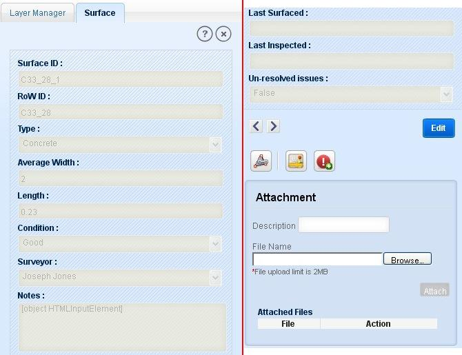
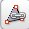
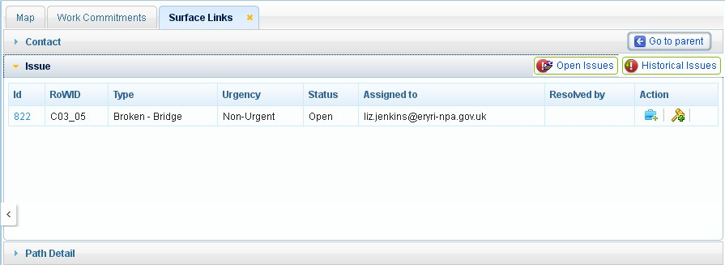
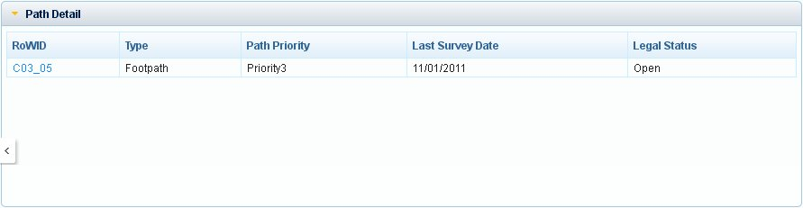
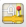

In this module, user is enabled with the functionalities like view surface details, edit surface details, create issue on surface and view surface links. These functionalities are described below:
In this functionality, user is allowed to view detailed information of a selected surface. For this user first has to make Surface layer as active layer.
User selects Surface by Search/ Query Builder/ Select Feature/ Select by Rectangle/Select by Polygon. Selected feature/features should be displayed in result panel.
Select the required record from result panel and click on ‘Detailed Info’ tool on top of result panel.
Application opens new tab ‘Surface’ in left panel with the detailed information of selected surface in read only format.
The Surface details include attributes as shown in below figures:

Fig. 1 Surface Details
This tab also include
Button: ‘Edit’
Links: ‘Previous’ and ‘Next’
Tools: View Surface Links, Map It, Create Issue
An attachment box with the list of already attached documents (if any) as shown in figure above.
Attach File: In the attachment box, user is allowed to attach any type of file (up to 2mb) like test file or image file.
To attach a file to furniture:
- Enter the description.
Enter the file path or browse to the location of file.
Click on Attach button.
On successful attachment document will be displayed in the documents list.
To remove an attachment:
To remove an attachment, click on the remove icon in Action column. Application displays conformation message “Are You Sure you want to delete”.
Click Ok and the document will be removed from list.
Click Cancel to discard.
To open a pre-attached document click on that document’s name in files list.
To edit Surface information, user first has to view the detailed information of selected Surface in left panel.
In detail information tab of Surface, click on ‘Edit’ button. Application changes the attributes to editable form and displays two buttons ‘Cancel’ and ‘Save’ instead of Edit.
After doing the required changes in attribute fields, click on ‘Save’ button.
Application saves the changes by creating the old records as historical details and the changes will be saved as current details for selected surface.
On saving the changes application displays message as “Data saved”.
Click on Cancel button, application discard the changes and the attributes are changed to read only format.
This functionality allows users to view historical survey details of selected Surface as Historical Details.
To view historical details of selected Surface, click on ‘Previous’ tool present on Surface tab. Application shows the historical details previous of current details of selected surface. Previous tool allows user to traverse through the historical details of selected Surface till oldest historical details.
After first historical details, if user clicks on ‘Previous’ tool, application shows the message as “No Historical Records”.
To view later version of the surface details, click on ‘Next’ button. As user reaches to the latest version, application displays message as “No More Records”.
This tool allows user to view issues and contacts related to a selected Surface. In this section user can see the parent path information of the selected surface.
Select desired Surface and click on detailed info tool.
Click on ‘Surface Links’  icon on Surface tab. Application opens a new tab ‘Surface Links’ on map window. This window consists of three accordions: Contact, Issue and Path Details.
Click on ‘Go to Parent’ button again shows the Surface details on left panel if surface details tab is closed.
To go any of the accordions, just click on that accordion.
These accordions are described below:
Issues
As user clicks on Issue accordion, application expands the accordion with the list of all open issues (if exists) in tabular format for selected Surface. This accordion has two buttons ‘Open Issues’ and ‘Historical Issues’.

Fig.2 Issue Related to Surface
To view the old issues on selected Surface, user clicks on ‘Historical Issues’ button. Application will display list of all issues those are resolved for selected surface.
If no historical issue exists for selected surface, application shows a message “No historical issues are associated with selected Surface”.
To go to the open issues list again, click on Open Issues button. Application will display the open issues list again.
User can view the issue details by clicking on the RoW ID of the issue. The issue details will be shown in left panel as Issue tab.
In the tabular list of the open issues, in the last column ‘Action’ table have two icons: Create/view Job and Create/View Legal.
On clicking ‘Create/View job’ application opens a form in left panel as Job with job details (if already created) or as a new form to create job for that issue (if job is not created).
Similarly if user clicks on ‘Create/View Legal’ icon, application opens a form in left panel as Legal with legal details if already created or a blank form to create a new legal (if legal is not created).
Contact
Contact part contains the list of contacts of SNPA contractors related to selected surface. Here user is allowed to add new contact to Surface and select a contact to add to the selected surface from the contractor’s existing list.
As user clicks on a Contact accordion, application expands contact tab with the tabular list of contacts related to the selected Surface. Top of this tab two buttons ‘Add New Contact’ and ‘Add Existing Contact’ is also there.
To view detailed information of a contact, click on ContactID of a record. Application will display the detailed information of contact in Contact tab in left panel.
In the last column of the table a tool ‘Delete’ exist to delete the contact record.
To add a new contact to selected surface, click on Add New Contact button and to add a contact from the existing list of contacts, click on Add Existing Contact button.
Path Details
In this section of Surface link, user is allowed to view the parent path information.
Click on Path Details option, application expands the accordion with details of parent path on which that surface exists.

Fig.4 Parent path details of surface
Click on RoWID of parent path. Application displays detailed information of the parent path in left panel.
With this functionality user is allowed to zoom to selected surface from the detailed information of the surface.
Click on ‘Locate on Map’  tool on Furniture tab. Application zooms to the selected furniture on map canvas.
User is allowed to mark an issue on surface under this functionality. To create an issue over surface:
Select surface and view its detailed information in surface tab.
Click on ‘Create Issue’ button. Application opens editing tab in left panel with editing functionalities.
Click on Create link in editing tab. Application expands Create link.
Select point tool from Create part.
Click on map over selected surface at required location. If user clicks at a location other than selected surface application displays message “No surface found at this location”.
On clicking over surface, application expands Edit Attribute link with all the issue details.
Enter the values for all the fields. Click on ‘Apply’ button. Application validates the fields and displays message “Click on Save button to save the Issue”.
Click ‘Ok’ and save the issue by clicking on ‘Save’ button in general editing tools. Application displays the issue on the selected surface.